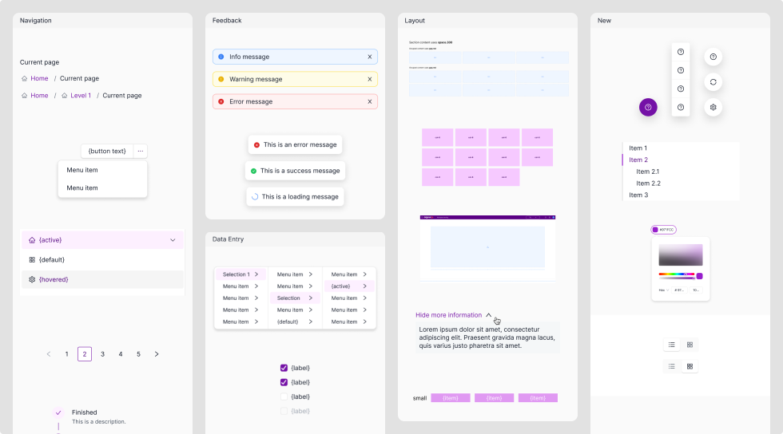
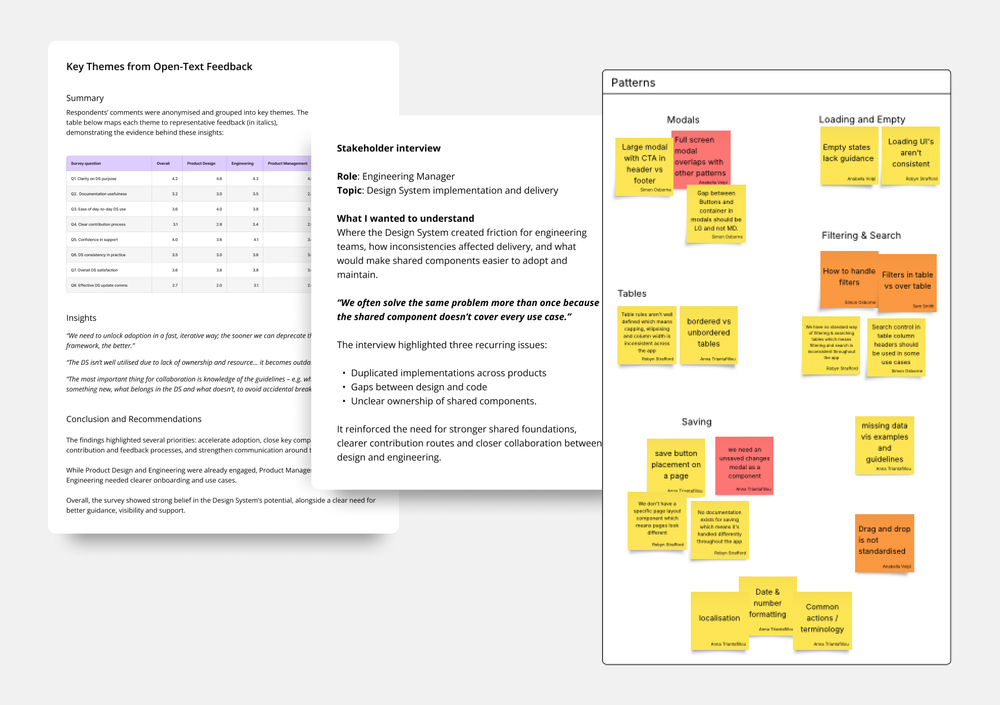
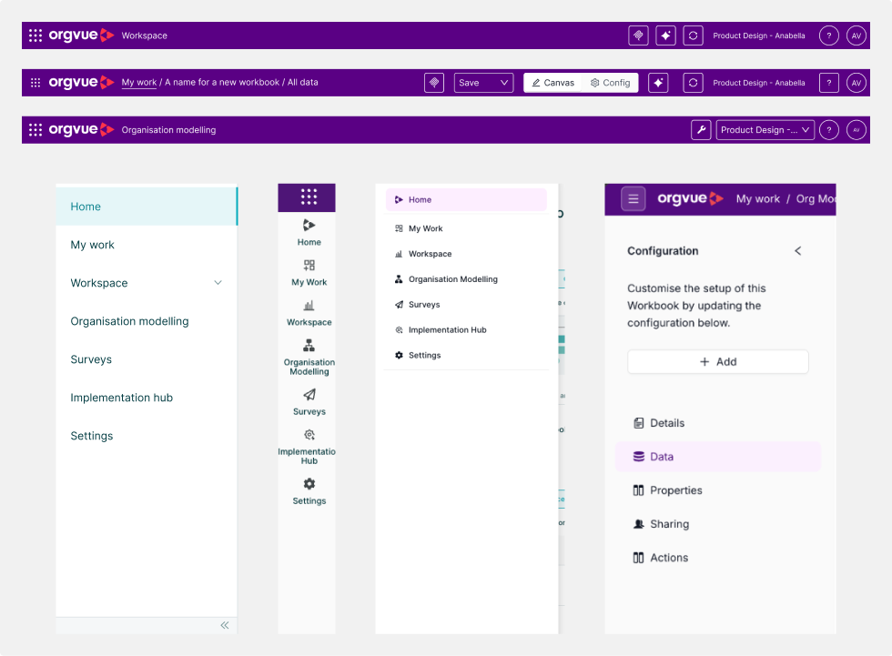
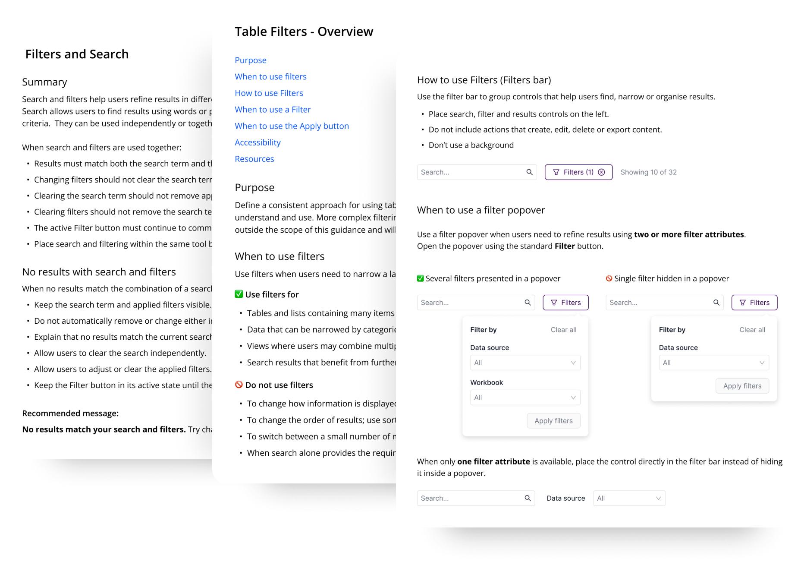

Inconsistent components and unclear guidance
Standardise components and interaction patterns across products, with clear guidance on when and how to use them.

Overview
The Design System was already providing value, but it wasn't mature enough to support product development consistently across Orgvue.
Teams still had to solve common UI and UX problems independently. Key components and patterns were missing, guidance was fragmented, and the shared technical foundations needed further development.
This led to duplicated work, inconsistent experiences and additional maintenance across products. The challenge was to evolve the Design System from a useful component library into a scalable, shared foundation for both human and AI-assisted development.
Areas of work
We ran a survey across R&D to understand how teams experienced the design system and establish a baseline for future comparison. We received responses across design, engineering and product management
The feedback highlighted missing components, unclear contribution guidance and inconsistent communication about updates. It also raised concerns about ownership and limited resources.
Standardise components and interaction patterns across products, with clear guidance on when and how to use them.
Prioritise the components and patterns squads needed first so upcoming releases could stay on track.
Address accessibility issues in shared components and patterns so the same fixes can benefit multiple products.
Research and synthesis
The survey gave us a broad view of where teams struggled. I followed this with an audit of components and interaction patterns across the products to understand how those issues appeared in practice.
I compared existing implementations, documented inconsistencies and worked with product designers to understand why different variations had emerged.
This helped us separate one-off product needs from problems that belonged at system level, and gave us a clearer backlog of components and patterns to improve.

System audit
This example focuses on navigation, where the audit revealed different approaches to structure, hierarchy and common controls across products.
Navigation varied between full menus, icon-only menus and different header layouts.
Common controls appeared in different positions and groupings across products.
Context varied between product names, breadcrumbs and workspace labels.

Shared patterns
The audit showed where similar interactions had evolved differently across products.
Users struggled to understand when filters were active, clear them easily, and work with large or complex datasets.
“There should be a simple way to clear all filters instead of resetting everything one by one.”
“When I’m working with a large dataset, filtering becomes difficult to manage.”
“I can’t always tell when a filter is active unless I go back into the controls.”
How filters should behave across different contexts: placement, selection types, search, persistence, screen space and specialist use cases.
A documented shared pattern that defined where filters live, how they behave, and when teams should use alternative controls.

Implementation
I used Codex to prototype new design-system patterns against the existing product codebase rather than working only in static mockups.
My manager and I set up the workflow so Codex could reference the correct components, design tokens and guidance. We also structured documentation in Markdown/MDX so the same rules and usage guidance could support both the team and AI-assisted workflows.
The prototypes were reviewed with engineers, refined where needed, and the agreed patterns were then implemented in Storybook.